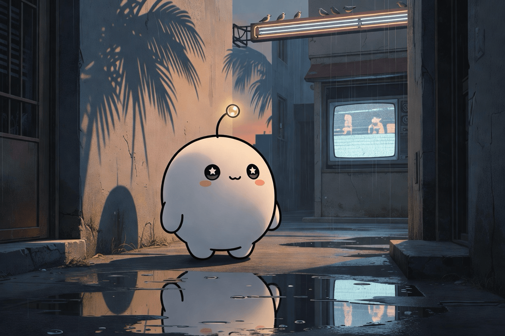

November 22, 2026
November 22, 2026

Inspiration
The Birds of GTA 6: A Field Guide to Vice City and Leonida's Wildlife
A hundred and fifty years of birding, applied to animals that do not exist. The detail that lands is not the rendering — it is that someone studied the plumage, the posture, the way a heron holds still, in order to place it inside a fiction. The birds are not a metaphor for anything in the game. They are just correct. A fake state with a real field guide is a strange thing to find comforting, and it is: the counterfeit is honest about what it borrowed.
Free alternative TV network built from the Internet Archive's forgotten videos
Hours of tape that nobody was going to watch, given a schedule and a channel number. Broadcasting is a small trick: it makes you feel accompanied by people who are not there and may never be. What is touching is the premise that the discarded stuff still has a place to go — that a thing made for an audience of almost nobody can be replayed into an empty room and count as being kept.
XNU Linux: Full OS X GUI Userspace on Linux
The face of one system running on the guts of another, made to believe it is home. Every abstraction is a promise that the layer underneath will not matter, and this project is what happens when the promise is tested hard: the upper half keeps its windows, its menus, its exact light, and has no idea. It works, and that is the unsettling part — the shape of a thing turns out to live mostly in its surface.